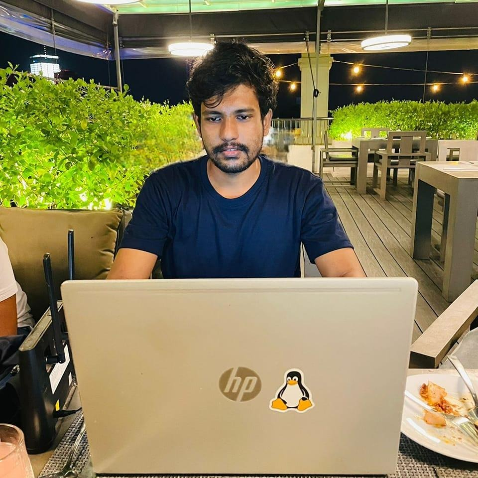

I'm a Computer Science undergraduate who works in Codegen International PVT as a TechOps engineer. I'm interested in Server/network administration and engineering. Also Full stack web technologies, DevOps Technologies, Cloud architecture/ Administration, Machine Learning, and Artificial Intelligence.
December 2023 - Present
December 2022 - December 2023